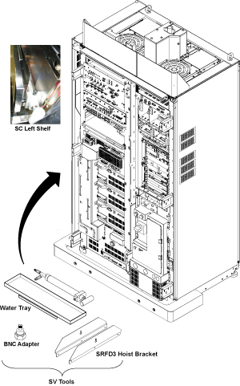

- 00000018WIA308ACF20GYZ
- id_131069891.10
- Jul 5, 2019 11:49:11 PM
Universal Power Monitor - Body Setup and Calibration
Prerequisites
| Required persons | Preliminary requirements | Procedure | Finalization |
|---|---|---|---|
| 1 | Not Applicable | 30 minutes | Not Applicable |
| Item | Quantity | Effectivity | Part number | Manufacturer |
|---|---|---|---|---|
| Power Measurement Kit | 1 | - |
46-317724g1 or g2 | - |
| 25 KW 30 dB Attenuator (Dummy Load) | 1 | - |
46317724p14 | - |
| 50 Ohm Terminator | 1 | - |
46-265874p1 | - |
| 7/16Male -N Female Adapter (Attached in System Cabinet) | 1 | - |
5166139 | - |
| ||||
About this task
This procedure sets up the Universal Power Monitors (UPM’s) in Body Mode, by using the system and the Power Measurement Kit (Wattmeter). For proper calibration of the Universal Power Monitors, (UPM) Forward Power must be completed in Body mode.
BODY FORWARD POWER CALIBRATION
Procedure
- Remove the Body RF cable from J4. Connect the RF dummy load
into J4. Use 7/16 Male - N Female Adapter attached in System Cabinet.Note:
If the body section of the 1.5T SRFD3 Max Power RF Output and Calibration procedure was just completed, configuration is the same. You can leave the head RF cable disconnected and body can keep the wattmeter in line. It will not change the outcome of the calibration.
Note:7/16Male -N Female Adapter is located at System Cabinet Left Shelf. Remove left cover and find it. See Figure 2Figure 2. Built In Service Tool 
Figure 3. Plug the Dummy Load into J4, Body Out 
Setting up Software Tool to Calibrate UPM - Body Forward Power
About this task
This tool must see a Landmark only. It is not necessary to have a Head coil in place, or any other scan parameter entered than what is described below. Simply Landmark on the cradle where the Head coil would be.
Procedure
Finalization
Procedure
- Place the RF ENABLE switch on front of exciter in the DISABLE (Down) position.
- Remove the cables and power measurement equipment.
- Reattach the Body Heliax Cables.
- Re-enable T/R Drive. See Driver Module, Figure 1.
- Switch RF ENable on the front of the exciter to the Enable (up) position.
- Upon completion of UPM calibration, Reset TPS. The system will not scan until this step is done